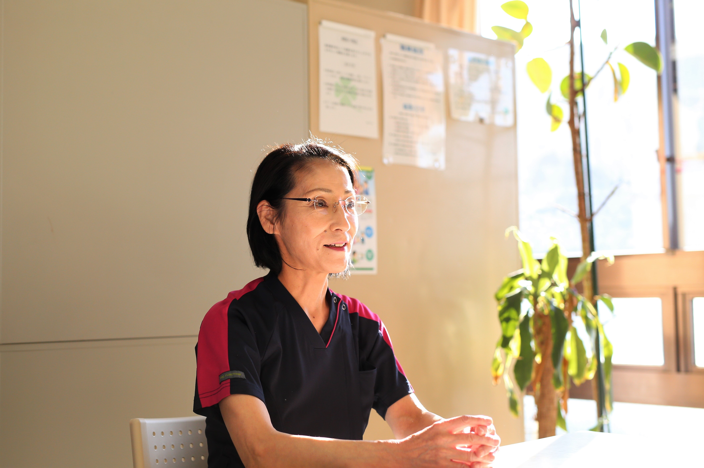

当院は整形外科と内科の診療科をもつケアミックスの病院です。
「患者様が安心して医療を受けることができるやさしい病院を目指す」という病院の理念に基づき、患者様の尊厳や権利を尊重し温かい手、温かい心で看護することを心がけています。
そして、安全で安心出来る療養環境が提供できるよう研修などを行い自己研鑽に努めています。
地域の患者様やご家族が「この病院でよかった」と満足していただけることが私たちのやりがいや達成感に繋がると考えています。